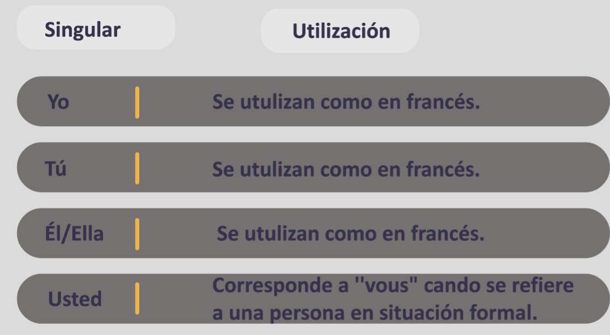
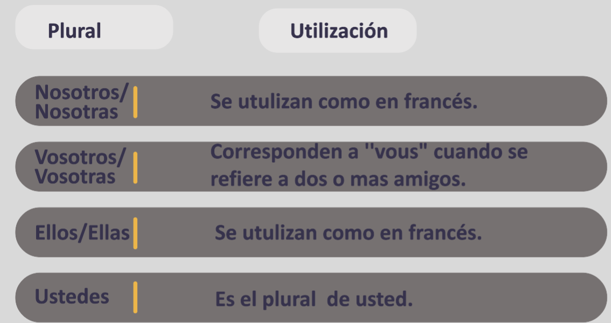

1) Los pronombres personales:

Los pronombres personales se utilizan para designar personas y se classifican en singluliar y plurales.
Los pronombres personales pluriales

Los verbos regulares (presante)
En espapnol, los verbos son classifican en tres grupos:
1-Los verbos terminado en –AR
2-Los verbos terminado en –ER
3-Los verbos terminado en –IR
para conjugar un verbo, tomar[il faut] el radical y
añadir[ajouter] la terminación necesaria (en la tabla).
Si hay un verbo con la terminacion sentirse , este es ir + se.

El ejercicios: